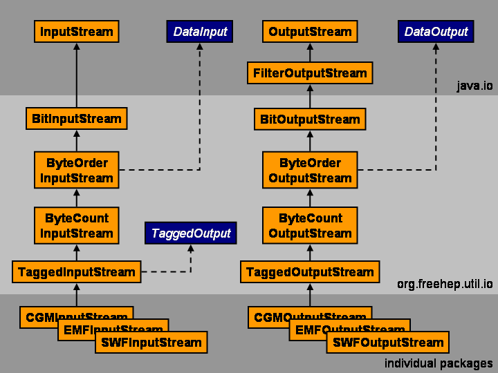

FreeHEP IO
Extensions to the Java IO system
Overview
The FreeHEP IO package extends the Java IO package with a number of
input and output streams.
The FreeHEP IO package lives in org.freehep.util.io and is included
in freehep-base.jar.
The FreeHEP IO streams are in use by the FreeHEP
VectorGraphics
package and the PostScript viewer. Of course all these classes are
usable elsewhere.
A special part of the streams are the "Tagged" in and output streams
which allow for tagged blocks to be read and written.

Below follows a description of the different streams available:
General Streams
- FinishableOutputStream
- This interface allows you to call finish() on a stream, which will
write any end-of-stream marker.
- NoCloseInputStream
- This class (which is buffered by itself) allows you to call a
non-active close(). If you have a stream from which you suddenly need
to read in a different encoding (ASCII85, ...), wrap the stream in a
NoCloseInputStream, then wrap that one in the encoding, read until the
end-of-stream marker, then close that stream and keep reading from the
underlying stream.
- BitIn- / OutputStream
- Reads or writes in bit format of any length bit streams.
- ByteOrderInput- / OutputStream
- Reads or writes lo- of hi-endian byte streams.
- ByteCountInput- / OutputStream
- Reads or writes a stream while keeping track the number of bytes
read or written. Also keeps track of sub-counts if necessary.
- UniquePrintStream
- Keeps track of the strings one is printing and prints them only on
the first occasion. Allows you to filter error messages for instance.
Standard Encoding Streams
- ASCII85In- / OutputStream
- Reads or writes ASCII85 encoding, used in e-mail for instance.
- ASCIIHexIn- / OutputStream
- Reads or writes ASCIIHex encoding.
- DCTIn- / OutputStream
- Reads or writes Discrete Cosine Transform encoding, used in JPEG
image for instance.
- RunLengthIn- / OutputStream
- Reads or writes Run Length encoding, used in PostScript sometimes.
- EExecEn- / Decryption
- Reads or writes EExec encoding, used in Type1 fonts.
Tagged Streams
- TaggedInput- / OutputStream, Tag, UndefinedTag, TagSet, Action,
Action.Unknown and ActionSet
- Reads or writes tags. Tags are blocks identified by some tag-id
and a tag-length. A specific TagSet can be used to handle the tags as
they are read or written. UndefinedTags can be skipped automatically.
For writing the tag-length is automatically calculated. Total stream
length can also be calculated. Actions are handled as a special set of
"Tags".
Conditional Streams
- ConditionalInputStream
- Reads a stream and filters parts depending on properties set and
statements in the stream. Works like the conditional compilation part
of a C pre-processor.
- RoutedInputStream and RouteListener
- Routes a stream to a listener, who can keep reading from the
stream, for a certain delimited part of the stream.
- PromptInputStream and PromptListener
- Reads a stream until the prompt and signals the listener.
Miscellaneous Classes
- StandardFileFilter
- Implements a filter with the default file filter scheme used in
most Operating Systems. You can specify "*" for 0 or more "any"
characters, and "?" for a single "any" character.